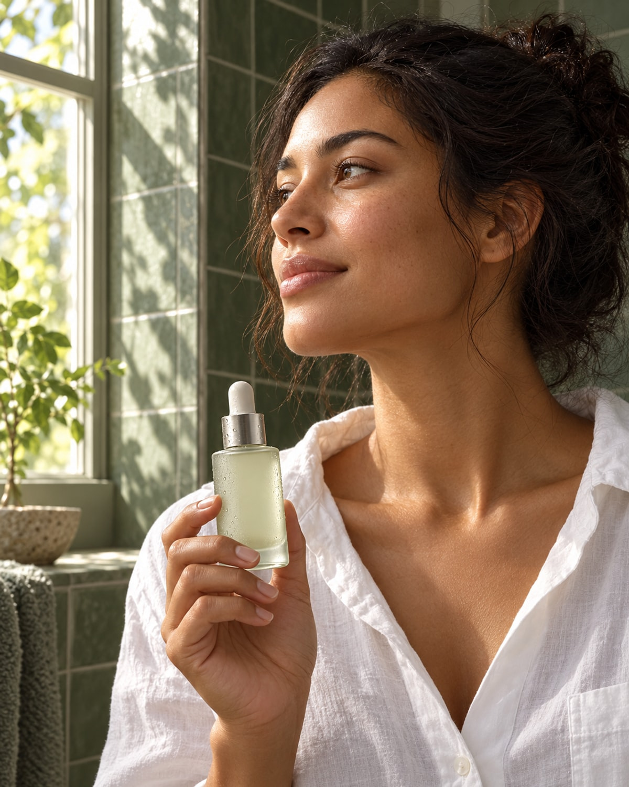
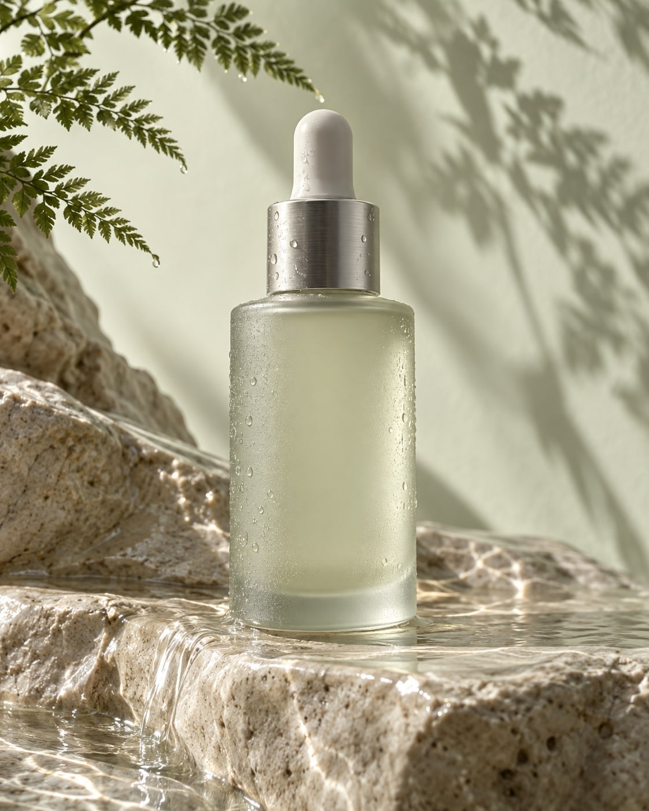
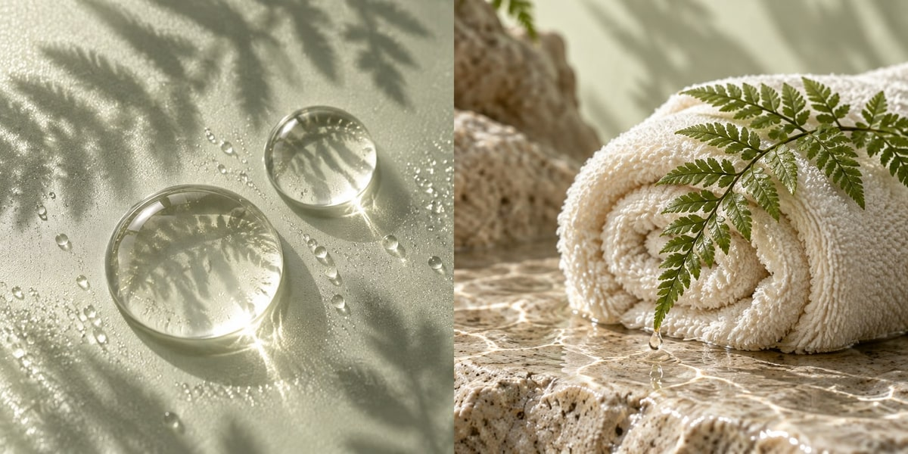
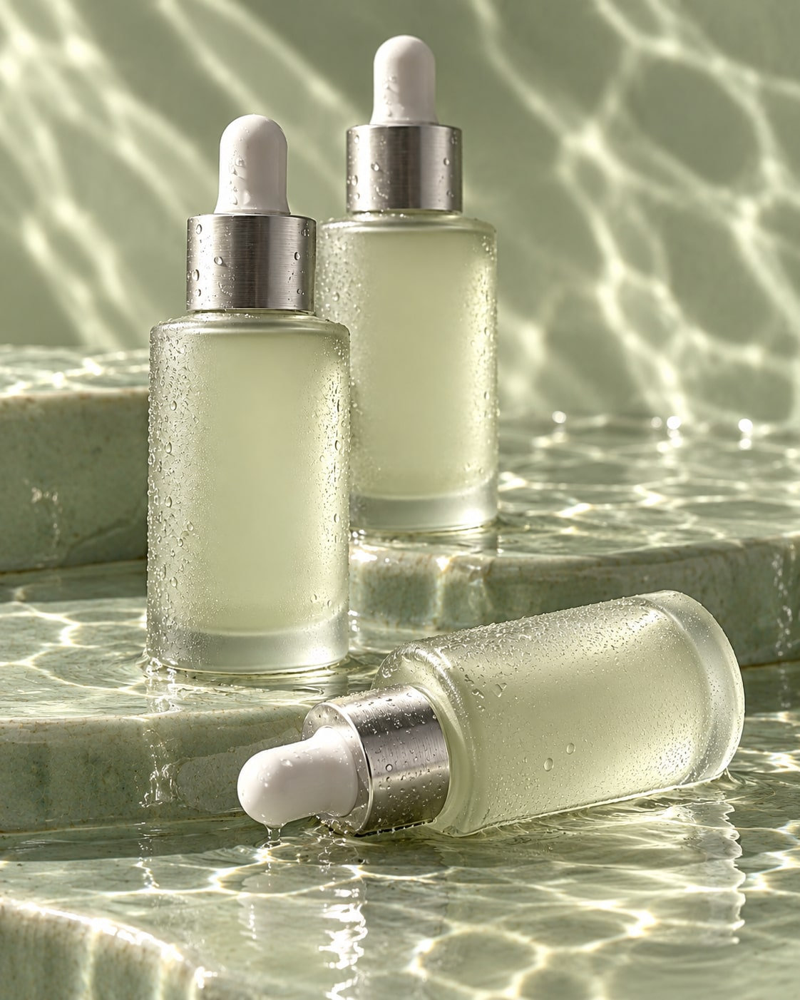

FIJN DAT JE ER BENT

Een paar minuten voor jezelf kunnen al een fijn begin zijn. Ontdek onze collectie en maak er jouw ritueel van.

Van het glas op de plank tot de textuur van een druppel: je ontdekt het stap voor stap.

Een blik van dichtbij.

Ruimte voor je routine.